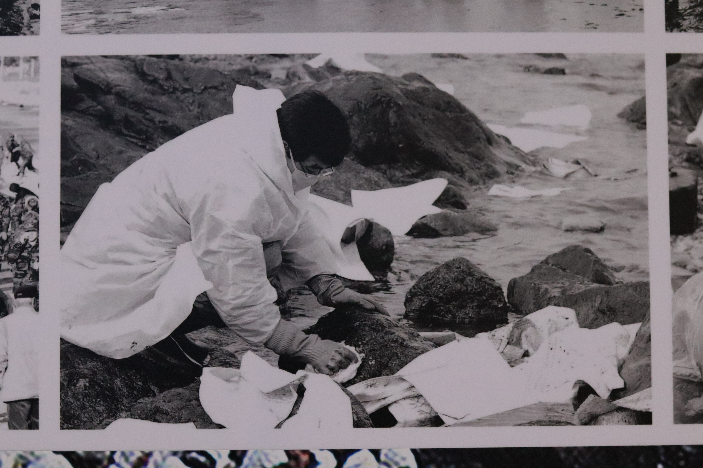
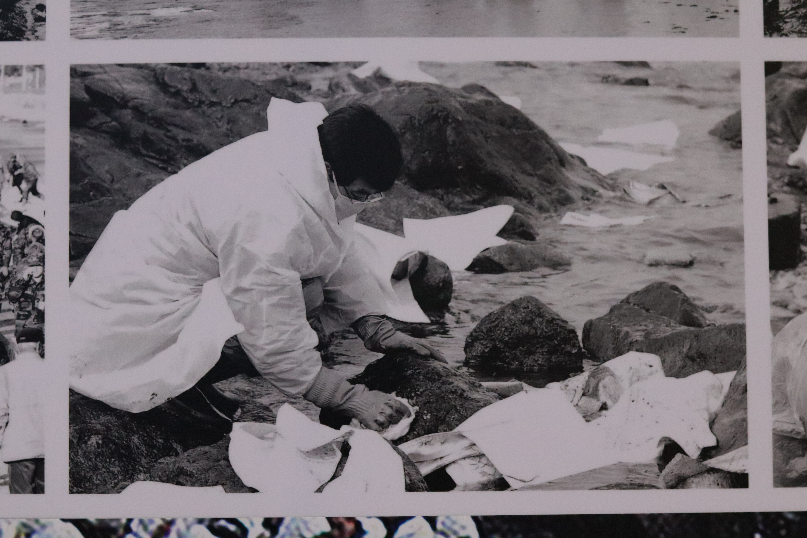
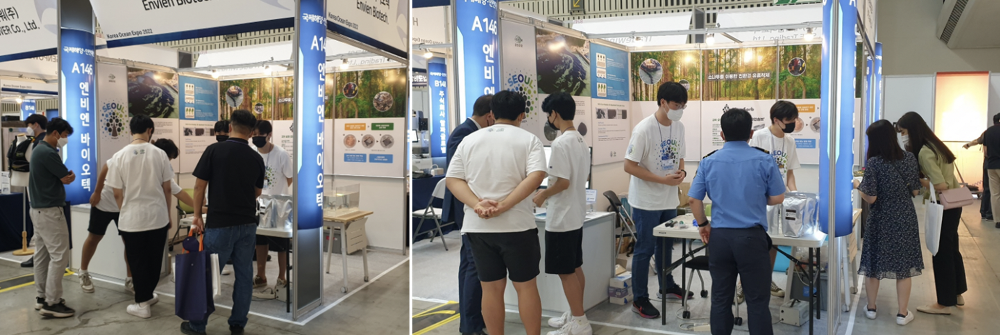
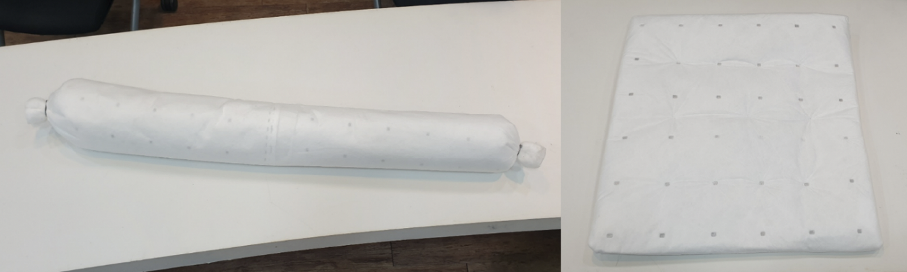
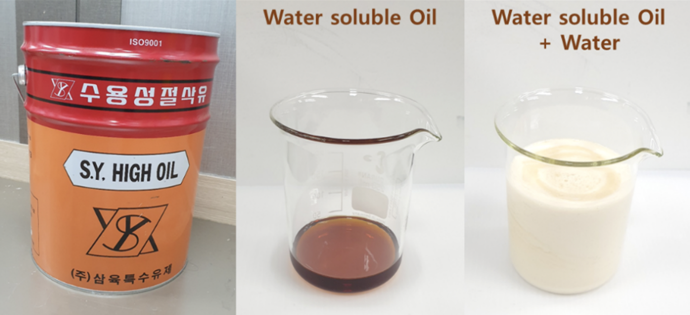
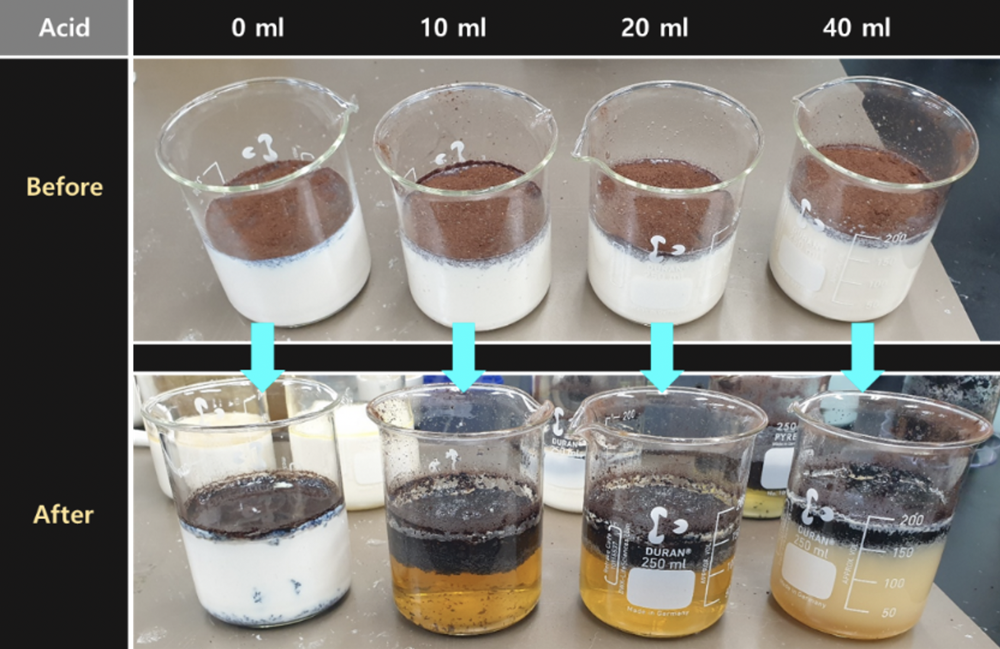
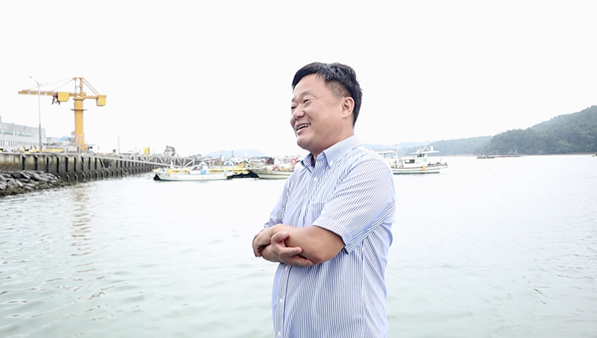
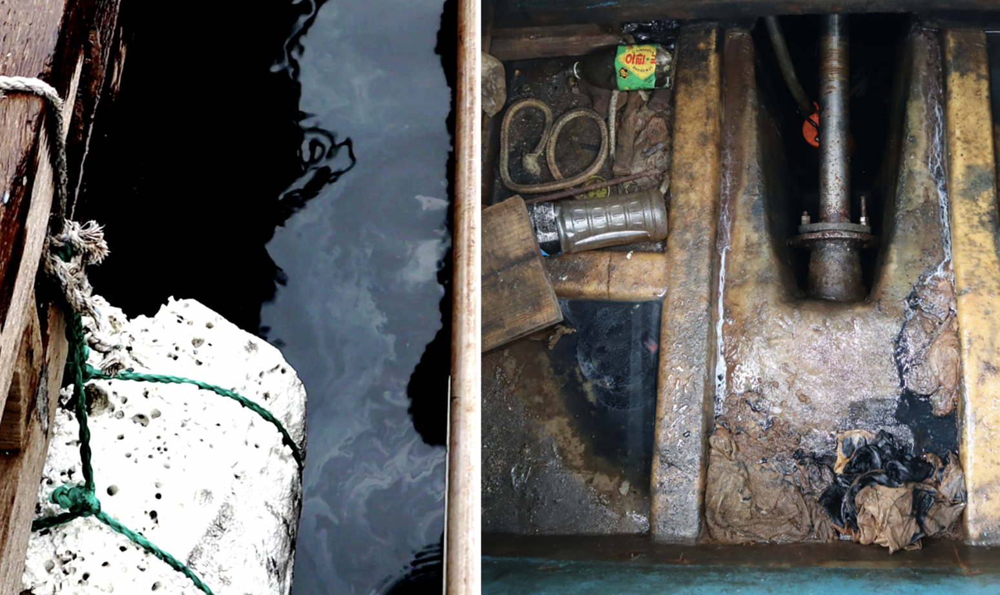
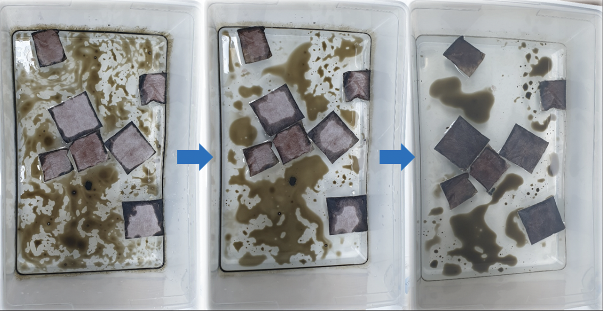

Human Practices
Introduction
When browsing through photos of oil-covered beaches, birds, and other marine wildlife, it is evident that oil-spills are environmental disasters. What is not reflected in those photos, however, is the extensive and wide-spread effect an incident can have on human life. Because both the cause and result of oil-spills involve humans, actively reflecting on how our eco-friendly oil sorbent interacts with the world is an integral part of our project.
Though we were aware of the importance of human practices, we had no idea of the ways and depth that these activities had on the direction and execution of our project. As can be seen below in a loose summary of our human practice initiatives, our activities have led to both expected and unexpected consequences for our project, all of which have
Taean Oil Spill Memorial
In order to appreciate the human cause and pain of oil spills, we started our human practice activities with a visit to the Taean District oil spill memorial. The 2007 oil spill remains the largest oil spill in Korean history, with an estimated 10,500 tons of crude oil spilled into the waters surrounding Mallipo beach.
What was immediately noticeable from our visit was both the scale and wide spectrum of damage inflicted on communities surrounding the area. Apart from the obvious damage on the local economy and environment, we could appreciate the plethora of psychological and medical problems that local communities suffered from. Given the lack of proper personal protective equipment (PPE) and emergency supplies of oil sorbents, local fishermen, volunteers, and the mobilized Korean army had to resort to labor intensive clean-up methods and reusing unwashed PPE.
 

What was surprising from our visit was just how grassroots the response to a national crisis really was, which reemphasized the need for an effective set of response tools, one of which our product could be used for. Visiting the past through the various perspectives of officials, responders, and local populations made clear the importance of not only making an effective tool, but one that is accessible to all and easy to apply. Our team has tried to reflect this value in all decisions that we have made involving the manufacture, sale, and application of PineSorb.
Korea Ocean Expo 2022 (Songdo, Incheon)
Given the entrepreneurial focus of PineSorb, our eco-friendly oil sorbent, a natural step was to try and meet our stakeholders and primary customers. For us, this turned up in the form of the Korea Ocean Expo, an international expo attended by businesses and figures in the marine and maritime safety industry.
Our booth showcased a short introduction of our product, as well as a demo that highlighted the oleophilic and hydrophobic qualities of PineSorb. Key stakeholders included officers from the Korea Coast Guard (headquartered in Incheon), and experts from the Korea Marine Environment Management Corporation and the Korean Agency for Defense Development. Interactions with these representatives were important as the Korea Coast Guard is responsible for the regulation and certification of emergency response equipment (including oil sorbents) under the Marine Environment Management Act.
We were able to talk with Officer Seung Eun Kim from the Korea Coast Guard, who is responsible for the testing of emergency response equipment. He gave us insight into the process of testing and certifying emergency response equipment. In particular, he stressed the difference between ordinary and special response equipment classifications – if classified as ordinary response equipment, the testing of PineSorb as a worthy oil sorbent would solely be assessed on adsorption capacity alone. In that case, the eco-friendliness of our product would not be considered in testing, an aspect which he thought was important for the future of oil spill management. He further offered comments about the form of our product, and that we might benefit considering either a boom or pad-shaped design for easier application. This led to our efforts in prototyping and testing various vessels in which PineSorb could be applied, some of which is reflected in the images below.
Given the nature of an expo, we were also able to meet numerous business owners, each of whom offered new insight into their respective businesses, and the problems they faced. One important point was that the diverse set of unique problems were not limited to marine environments; the difficulties for which PineSorb could be useful ranged from oil contamination in oyster farms to land-based wastewater treatment. A few significant interactions have been summarized below.
Integrated Human Practices
During the 2nd day of our expo, we met a couple who ran a wastewater treatment facility in Jeonju, Jeollabuk-do. Their factory, as they explained, treats industrial wastewater, which often contains cutting oils, a type of lubricant used with cutting and drilling machinery to provide a safer and cleaner machine finish. Unlike normal oils, cutting oils are often ‘water soluble’ and readily form steady emulsions that conventional treatment facilities have difficulty with. Metalworkers purchase cutting oil in concentrates and dilute them before use, resulting in a milky-white wastewater that is difficult to treat.
After a demonstration of the hydrophobic properties of PineSorb, the couple from this facility inquired whether our product could be used in their treatment process of wastewater containing cutting oils. Sensing a potentially novel application of our product, our team searched for a method of cutting oil treatment using PineSorb.
As can be seen below, we successfully treated cutting-oil wastewater using PineSorb and an acid, turning the milky white solution into a clear one which could then be treated using conventional methods.
We were also approached by SunJin Jung, the CEO of Seabank, a company that specializes in GPS tags for vessels and boats. With experience in the maritime industry and knowledge about boat structures, Mr. Jung commented on the potential use of our product for the treatment of bilge water. After watching our demonstrations and discussing our product, Mr. Jung invited us to his fishing boat docked in Tongyeong to better highlight the problem of bilge water.
Bilge water is a liquid formed as a byproduct of engines, and is a mixture of seawater with engine oil, lubricants, and cleaning solvents. This mixture often accumulates in the bottom most cavity of a vessel, giving its name. Aboard his ship, Mr. Jung demonstrated the various difficulties that fishermen faced due to bilge water.
For vessels that do not weigh over 100 tons (which do not have bilge water treatment equipment on-board unlike ships of larger size), the law requires owners to dispose of bilge water through on-land waste treatment companies. As Mr. Jung explained, this is a highly impractical requirement for local fishermen, who rely on their vessels for daily fishing trips. They also face expensive fines; failure to dispose of bilge water through treatment companies can result in imprisonment up to 5 years, and a fine of $50,000.
Of the estimated 80,000 registered vessels of this size, most use a propulsion system that relies on an inboard engine that is connected to an external screw propeller. Given the nature of such a propulsion system, where an external propeller is turned by an internal engine, seawater seeps along the transmission shaft and accumulates in the bottom cavity. Similarly, accumulated bilge water also seeps out along the same transmission shaft, leaving an oil film behind the vessel which also incurs a fine ($500) and a temporary embargo. Because of this, fishermen often spray droplets of household dish soap into any formed oil film to avoid getting caught, worsening the environmental impact of oil releasement in marine environments.
Mr. Jung’s kind explanation of the current state of bilge water management by local fishing populations shed light on its environmental damage and how it could be better managed. Acknowledging the discrepancy between the expectation on vessels levied by legislation and the fisherman’s rationale led to ideas on how our product could be implemented to incentivize environmentally safe practices.
By his recommendation, our team further investigated the use of PineSorb as an oil sorbent to be used for bilge water. As can be seen below, teabags containing the adsorbent successfully adsorbed oil from both the surface and the container walls until they each reached saturation. Our team, with Mr. Jung’s opinion, concluded that a system of distribution between our team, local authorities, and the fishing population could better incentivize environmentally safe practices compared to the enforcement of current legislation. Such a system, named an “OIL CHAIN”, would have local authorities distribute PineSorb to individuals and collect the used product, which could be then sold as secondary fuel to reduce costs. Mr. Jung acknowledge that such a system, if well implemented, would foster safer environmental practices on the fisherman’s part.
Conclusion
Since the beginning of our project, our team has maintained an active attitude towards interacting with individuals we identified as relevant to oil adsorbents. What we did not expect was the significant influence and insight that interactions with other individuals provided.
Through our activities, we were able to gain insight into the problem of oil spills from legislative, environmental, and individual perspectives which we integrated into our product. The most evident change was to the physical form of our product, which we diversified into pads and booms to meet different needs in different oil-related situations.
Talking with interested individuals, we also identified potential new demands, both within the marine industry and outside of it. These incidents impacted our product development timeline, as we diverged from a linear progression to investigate how PineSorb could be applied to accommodate diverse needs. This is not the final step either; we are still within developing different forms of PineSorb (sausage roll shapes, multi-sized pads, etc.) to increase efficacy.
Most importantly, we were able to consider the interests of our perspective consumers more closely by physically visiting locations where oil-related incidents would be critical. By directly contributing to our understanding of their unique problems and the existing solutions, individuals helped us understand and plan how our product would be used after being initially purchased. Forming a distribution plan helped us understand the ways PineSorb would directly and indirectly influence the outcomes of oil-spills and the conventional practices of perspective consumers to favor environmental safety.
By challenging our understanding of oil-spills and of our own product, our human practice activities have tested and affirmed PineSorb’s viability and utility as an oil sorbent.